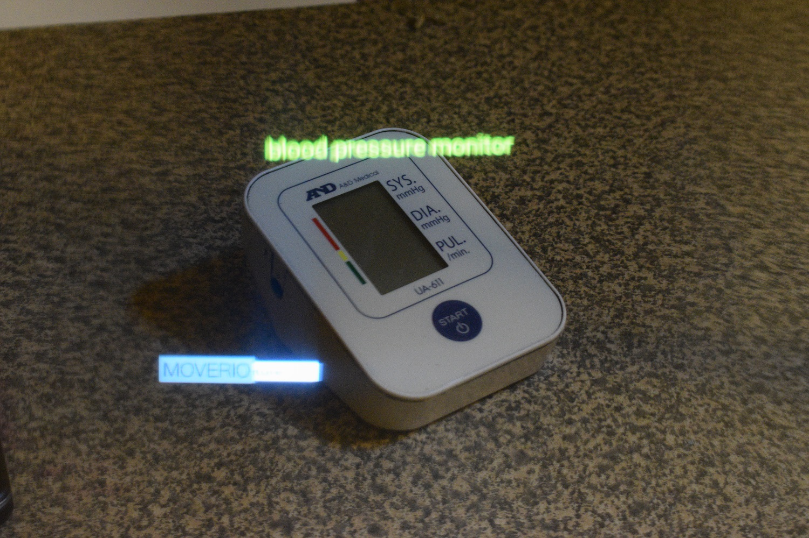
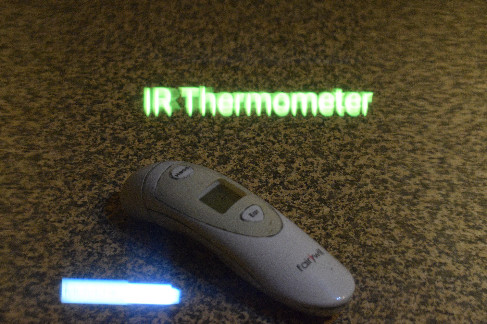

Implementation of finished functionalities

This is the view as if wearing the smart glasses, as it identifies the blood pressure monitor, displaying the text overlaid above the item.

Here the app has recognised the infrared digital thermometer and displays the text in 2D overlay mode, as if on a screen infront of the user.

This show the display in 3D AR mode, identifying the blood pressure monitor.
In this screen shot the thermometer is labelled in 3D AR mode, which follows the item around as it is moved, displaying as though just above it.